KI-Webdesign · Neunkirchen (Saar), 66538 · Stand 09.10.2026
Akquise-Mappe Neunkirchen
Zehn Betriebe aus der Innenstadt mit veraltetem Webauftritt, jeweils mit echtem Screenshot der aktuellen Seite und einer fertigen Vorschau mit ihren eigenen Inhalten. Schieber in die Mitte ziehen, Tablet umdrehen, Preis nennen.
95Websites geprüft
28Google-Profile abgefragt
10Vorher/Nachher fertig
29.990 €Pipeline-Mitte, bei 30 % Abschluss ca. 8.997 €
Quick WinGoogle 4,6 ★ (15)Besuch: Vormittag (nur Mo bis Fr 9 bis 13 Uhr geöffnet)
Schieber ziehen: links Vorher, rechts Nachher
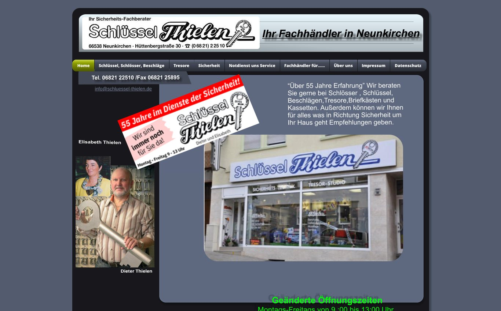
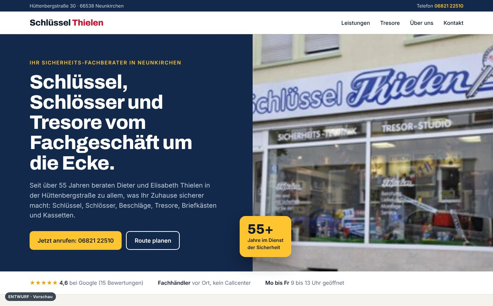
VORHERNACHHER
⇆
Was dem Inhaber auffällt
Startseite besteht fast nur aus einem Bild: Google kann Leistungen, Adresse und Öffnungszeiten kaum lesen (3 Wörter Text erkannt)
Auf dem Handy ist die Seite 986 px breit: Kunden müssen seitlich wischen und zoomen
Tabellenlayout mit Grafik-Schriftzügen, Gestaltung etwa aus der Zeit vor 2012
Schlüsseldienst wird fast nur über Google gesucht ('Schlüsseldienst Neunkirchen'). Eine lesbare Seite plus gepflegtes Google-Profil entscheidet, ob der Anruf bei Thielen oder bei einem überregionalen Notdienst-Callcenter landet.
Angebot
Basis-Relaunch590 bis 890 €
Empfohlen, einmalig990 bis 1.490 €
Betreuung / Monat29 bis 49 €
Onepager mit Leistungen, Ladenfoto, Öffnungszeiten, Klick-zum-Anrufen, Google-Profil vervollständigen (Fotos, Leistungen, Öffnungszeiten), Fotoshooting im Laden
Branchen-Extras
Google-Unternehmensprofil als Hauptkanal: Kategorien, Leistungen, 10 neue Fotos, Q&A
Bewertungs-QR-Aufsteller an der Kasse (aktuell nur 15 Bewertungen trotz 55 Jahren)
Lokale Einträge vereinheitlichen (Das Örtliche, Gelbe Seiten, 11880) für konsistente NAP-Daten
Seite 'Tresorberatung' als eigener Suchtreffer für höherwertige Aufträge
Gesprächsleitfaden
Herr Thielen, ich arbeite hier in Neunkirchen als Webdesigner. Ich habe mir Ihre Seite auf dem Handy angeschaut und Ihnen mitgebracht, wie sie in zwei Wochen aussehen könnte.
Einwand: 'Die Leute kennen uns doch': Die Stammkunden ja. Wer neu zuzieht oder nachts ausgesperrt ist, googelt. Mit 4,6 Sternen haben Sie das Vertrauen schon, die Seite muss es nur zeigen.
UmsatzhebelGoogle 4,4 ★ (230)Besuch: 14:45 bis 16:30 Uhr (zwischen Mittag und Abend)
Schieber ziehen: links Vorher, rechts Nachher
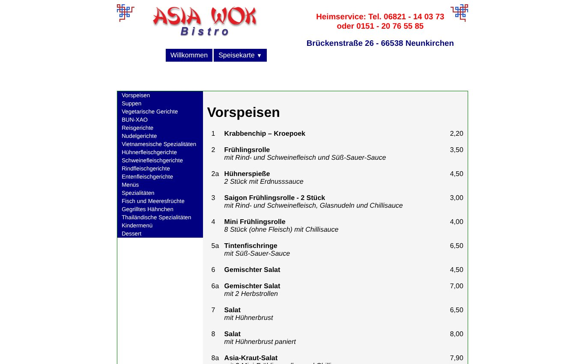
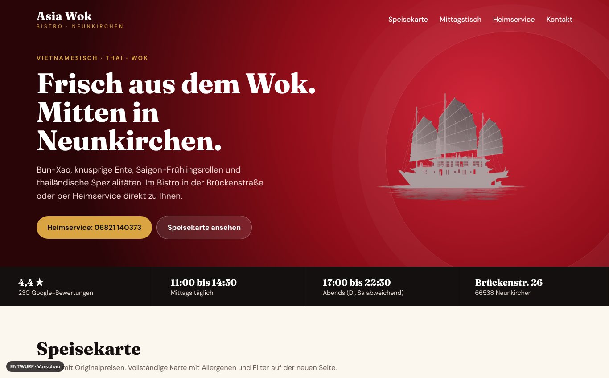
VORHERNACHHER
⇆
Was dem Inhaber auffällt
Kein Viewport-Tag: Die Seite ist nicht für Smartphones gebaut, Speisekarte nur als lange Liste
Gestaltung mit Rahmenmenü links und Schmuckgrafiken, Erscheinungsbild vor 2012
230 Google-Bewertungen mit Schnitt 4,4 werden auf der Website nicht genutzt, keine Online-Bestellung
Heimservice ohne Online-Bestellweg: Jede Bestellung kostet einen Anruf zur Stoßzeit. Ein eigenes Bestellformular ohne Provision entlastet das Telefon und erfasst Stammkunden.
Angebot
Basis-Relaunch990 bis 1.490 €
Empfohlen, einmalig1.890 bis 2.890 €
Betreuung / Monat49 bis 149 €
Mobile Speisekarte mit Kategorien und Allergenen, provisionsfreie Online-Bestellung für Abholung und Lieferung, Google-Profil mit Speisekarte und Bestelllink
Branchen-Extras
Speisekarte zweisprachig Deutsch und Englisch (Bewertungen zeigen Sprachbarrieren bei Gästen)
Wochenaktion 'Enten-Tag' als Google-Beitrag und Instagram-Story
Bewertungsantworten mit KI-Entwurf zur Freigabe, besonders bei Kritik
Mittagstisch-Seite für Berufstätige in der Innenstadt
Gesprächsleitfaden
Guten Tag, ich bin Webdesigner hier aus Neunkirchen. Sie haben 230 Google-Bewertungen, das ist richtig stark. Ich zeige Ihnen kurz, wie Ihre Seite das auf dem Handy in Bestellungen verwandeln kann.
Einwand: 'Die Leute rufen eh an': Genau, und zur Stoßzeit klingelt es ununterbrochen. Online-Bestellungen laufen parallel, ohne dass jemand ans Telefon muss.
UmsatzhebelGoogle 4,0 ★ (174)Besuch: Di bis Fr gegen 16:00 Uhr (vor Öffnung um 17 Uhr)
Schieber ziehen: links Vorher, rechts Nachher
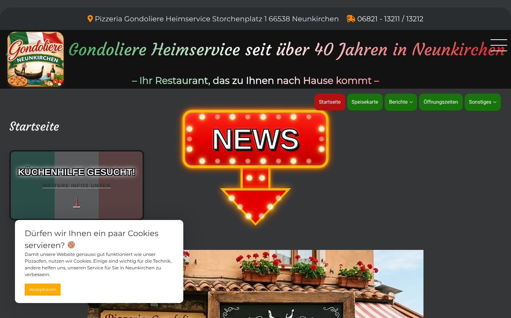
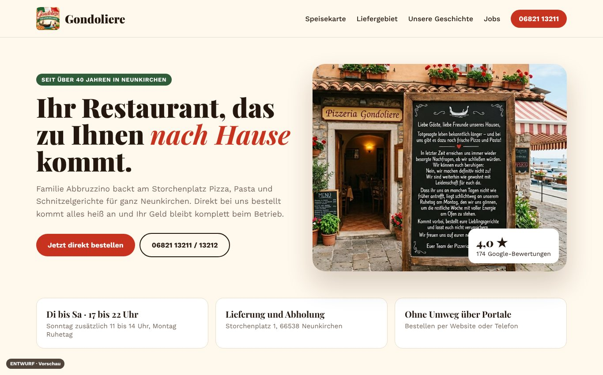
VORHERNACHHER
⇆
Was dem Inhaber auffällt
Ladezeit 21,8 Sekunden bis die Seite vollständig geladen ist
Besucherzähler, Wordart-Grafiken und blinkende 'NEWS'-Elemente wirken wie aus den 2000ern
Kein eigener Online-Bestellweg trotz über 40 Jahren Lieferdienst, Stellenanzeige versteckt im Fließtext
Beispielrechnung: Wer über Plattformen 23 bis 30 % Provision zahlt (Anbieterangabe, Vertrag prüfen), spart bei 25 verlagerten Bestellungen pro Woche à 22 € rund 6.500 bis 8.500 € im Jahr. Ohne Plattform gilt: Jede Online-Bestellung ist ein Anruf weniger.
Angebot
Basis-Relaunch990 bis 1.490 €
Empfohlen, einmalig1.990 bis 3.290 €
Betreuung / Monat59 bis 179 €
Neue Website mit Familiengeschichte, digitale Speisekarte, provisionsfreies Bestellsystem, Karriereseite 'Küchenhilfe gesucht', Google-Profil mit Bestelllink
Branchen-Extras
Stammkunden-Stempelkarte digital oder per QR auf dem Pizzakarton
Personalgewinnung: Stellenanzeige auf Website, Google-Beitrag, Facebook-Gruppen Neunkirchen
Bewertungsmanagement: 4,0 Schnitt mit Beschwerden über Lieferzeit, Antwortvorlagen und Lieferzeit-Hinweis auf der Seite
Instagram Reels vom Holzofen und der Familie Abbruzzino, 2 pro Woche
Gesprächsleitfaden
Guten Tag, Familie Abbruzzino? Ich mache Websites für Betriebe hier in Neunkirchen und habe Ihnen etwas mitgebracht: So könnte der Gondoliere nach 40 Jahren online aussehen, mit eigener Bestellung ohne Provision.
Einwand: 'Ich hab schon Lieferando': Bleibt auch. Aber Ihre Stammgäste, die seit Jahren bestellen, müssen dafür keine Provision kosten.
Quick WinGoogle nicht eindeutig gefundenBesuch: Vormittag oder telefonisch Termin vereinbaren
Schieber ziehen: links Vorher, rechts Nachher
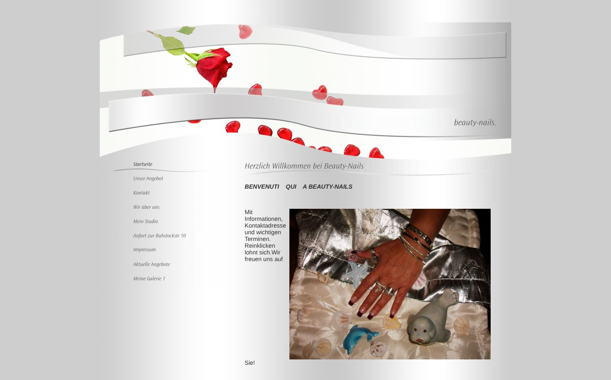
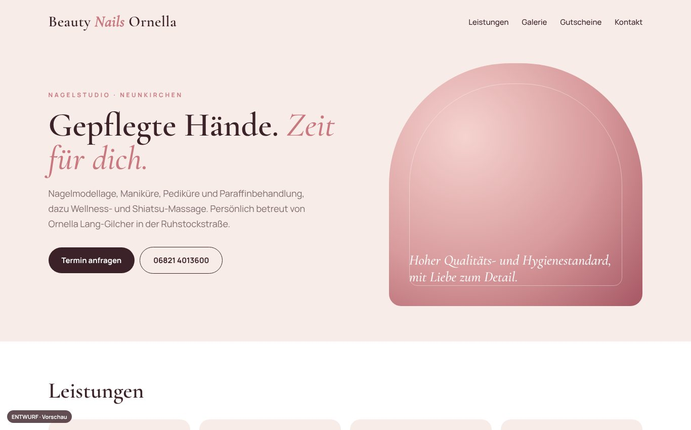
VORHERNACHHER
⇆
Was dem Inhaber auffällt
Serverseitig zuletzt geändert am 21.05.2012, Angebote und Preise auf diesem Stand
Kein Viewport-Tag, auf dem Handy 920 px breit
Kein auffindbares eigenes Google-Unternehmensprofil, Suche liefert ein anderes Studio im Saarpark-Center
Nagelstudios leben von Wiederholungsterminen und Google-Suche 'Nagelstudio Neunkirchen'. Ohne eigenes Google-Profil gehen Neukundinnen an die Konkurrenz im Saarpark-Center.
Angebot
Basis-Relaunch590 bis 890 €
Empfohlen, einmalig890 bis 1.390 €
Betreuung / Monat29 bis 99 €
Onepager mit Leistungen, Preisliste, Galerie, Online-Terminanfrage, Google-Unternehmensprofil neu anlegen und verifizieren
Branchen-Extras
Google-Profil neu: Kategorie Nagelstudio, Leistungen mit Preisen, Fotos der Arbeiten
Instagram mit Vorher-Nachher-Fotos der Nägel (mit Einwilligung), 3 Beiträge pro Woche
Online-Terminbuchung mit Erinnerung per SMS oder E-Mail
Gutscheinverkauf online zu Muttertag und Weihnachten
Gesprächsleitfaden
Guten Tag, Frau Lang-Gilcher? Ich bin Webdesigner aus Neunkirchen. Wenn man bei Google 'Nagelstudio Neunkirchen' sucht, findet man Ihr Studio kaum. Ich habe Ihnen mitgebracht, wie das aussehen könnte.
Einwand: 'Meine Kundinnen kommen über Empfehlung': Perfekt, dann sollte jede Empfehlung, die Sie googelt, auch sofort einen Termin anfragen können.
Solide ChanceGoogle 5,0 ★ (2)Besuch: Nachmittag Mo bis Do, kurz an der Anmeldung nach dem Inhaber fragen
Schieber ziehen: links Vorher, rechts Nachher
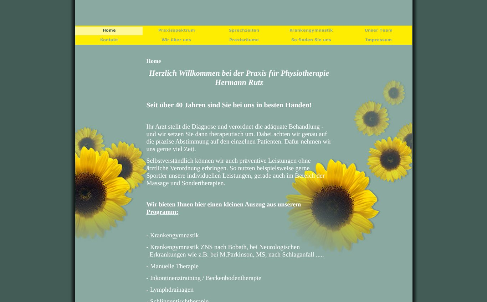
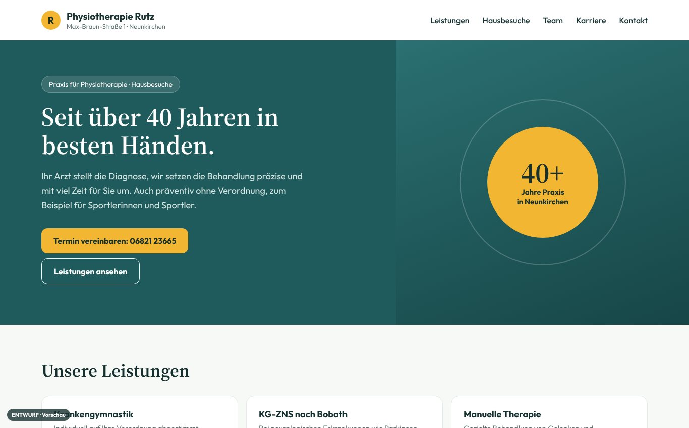
VORHERNACHHER
⇆
Was dem Inhaber auffällt
Kein Viewport-Tag, auf dem Handy 977 px breit
Sonnenblumen-Grafiken und gelbe Navigationsleiste, zuletzt 2021 geändert
Nur 2 Google-Bewertungen trotz über 40 Jahren Praxis, keine Hinweise auf Team, Karriere oder Hausbesuche oberhalb der Falz
Physiopraxen suchen fast überall Fachkräfte. Eine moderne Seite mit Karrierebereich ist hier oft wertvoller als neue Patienten: eine besetzte Stelle bringt mehr als jede Anzeige.
Angebot
Basis-Relaunch690 bis 1.190 €
Empfohlen, einmalig1.190 bis 1.790 €
Betreuung / Monat29 bis 79 €
Mehrseitige Website mit Leistungen, Hausbesuche, Team, Karriere, Terminanfrage, Google-Profil mit Leistungen und Fotos
Branchen-Extras
Karriereseite plus Google-Beitrag und Stellenportale für Physiotherapeutinnen und Physiotherapeuten
Bewertungsbitte per Karte nach Behandlungsserie (Heilmittelwerbegesetz beachten: keine Werbung mit Dankesschreiben)
Leistungsseiten verständlich erklärt (Bobath, Lymphdrainage, Beckenboden) für lokale Suchtreffer
Barrierearme Gestaltung für ältere Patientinnen und Patienten
Gesprächsleitfaden
Guten Tag, ich arbeite als Webdesigner hier in Neunkirchen. Ihre Praxis hat einen hervorragenden Ruf, online sieht man davon wenig. Ich habe Ihnen eine Vorschau mitgebracht, inklusive Karrierebereich.
Einwand: 'Wir sind voll': Dann ist die Karriereseite der Hebel. Mehr Therapeuten heißt mehr Termine, die Sie annehmen können.
Solide ChanceGoogle 4,8 ★ (56)Besuch: Nachmittag ab 14:30 Uhr, nach Inhaberin Frau Daniels fragen
Schieber ziehen: links Vorher, rechts Nachher
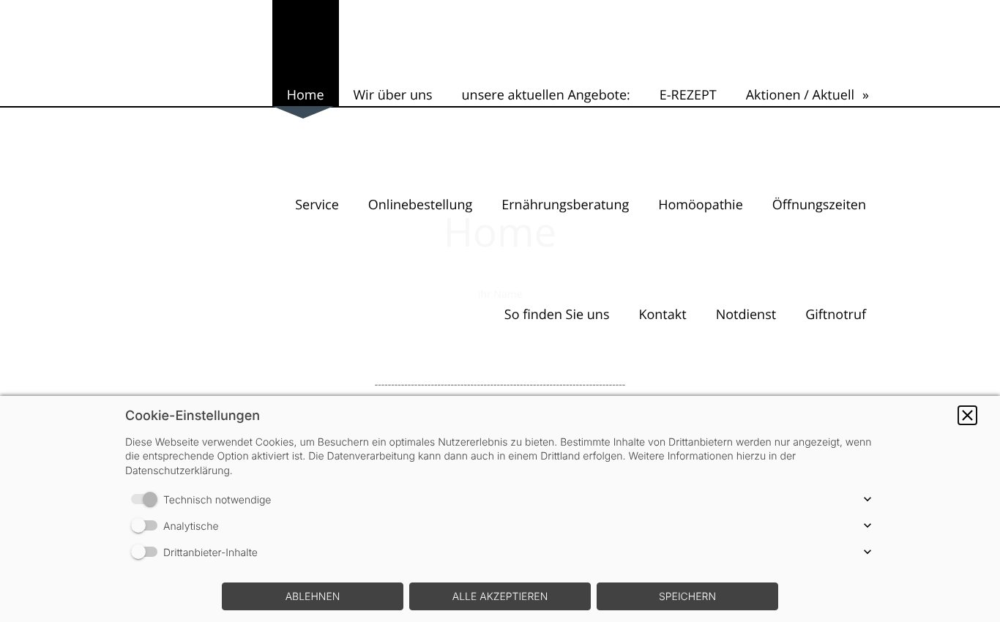
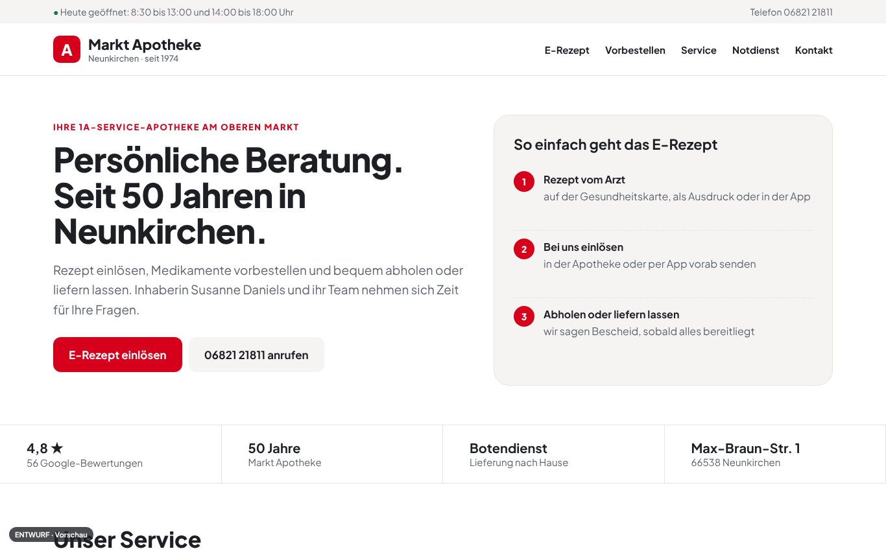
VORHERNACHHER
⇆
Was dem Inhaber auffällt
Im Kopfbereich steht noch der Platzhalter 'Ihr Name Ihr Slogan' aus dem Website-Baukasten
Trennlinien aus Bindestrichen im Text, Startseite optisch leer, jQuery 1.7 aus dem Jahr 2011
E-Rezept, Botendienst und Vorbestellung sind vorhanden, aber nicht prominent: wichtigste Kundenaufgaben fehlen oberhalb der Falz
Die Apotheke hat 4,8 Sterne und einen Botendienst. Wenn E-Rezept und Vorbestellung auf der Startseite stehen, landen Rezepte direkt hier statt bei Versandapotheken.
Angebot
Basis-Relaunch990 bis 1.690 €
Empfohlen, einmalig1.690 bis 2.690 €
Betreuung / Monat49 bis 129 €
Neue Website mit E-Rezept-Anleitung, Vorbestellung, Botendienst, Notdienstanzeige, Team, Google-Profil-Pflege
Branchen-Extras
Notdienst-Widget und Öffnungszeiten-Status live
Monatliche Aktionen im zulässigen Rahmen (Heilmittelwerbegesetz) als Google-Beitrag
Große Schrift und hoher Kontrast für ältere Kundschaft (Barrierefreiheit)
Karriereseite für PTA und Apothekerinnen und Apotheker
Gesprächsleitfaden
Guten Tag, ich bin Webdesigner aus Neunkirchen. Auf Ihrer Website steht oben noch 'Ihr Name Ihr Slogan' aus der Vorlage. Ich habe Ihnen mitgebracht, wie die Seite zum 50-jährigen Bestehen aussehen könnte.
Einwand: 'Wir haben doch eine Seite': Ja, und sie zeigt Kundinnen und Kunden gerade einen Vorlagentext. Das ist eine Kleinigkeit mit großer Wirkung auf Vertrauen.
UmsatzhebelGoogle 4,1 ★ (364)Besuch: 15:00 bis 16:30 Uhr (vor Öffnung um 17 Uhr), nicht dienstags
Schieber ziehen: links Vorher, rechts Nachher
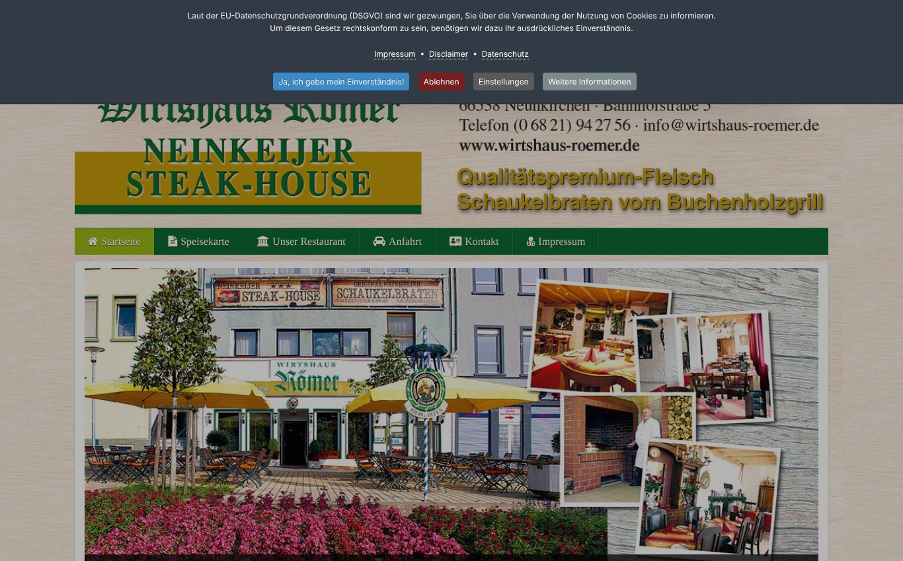
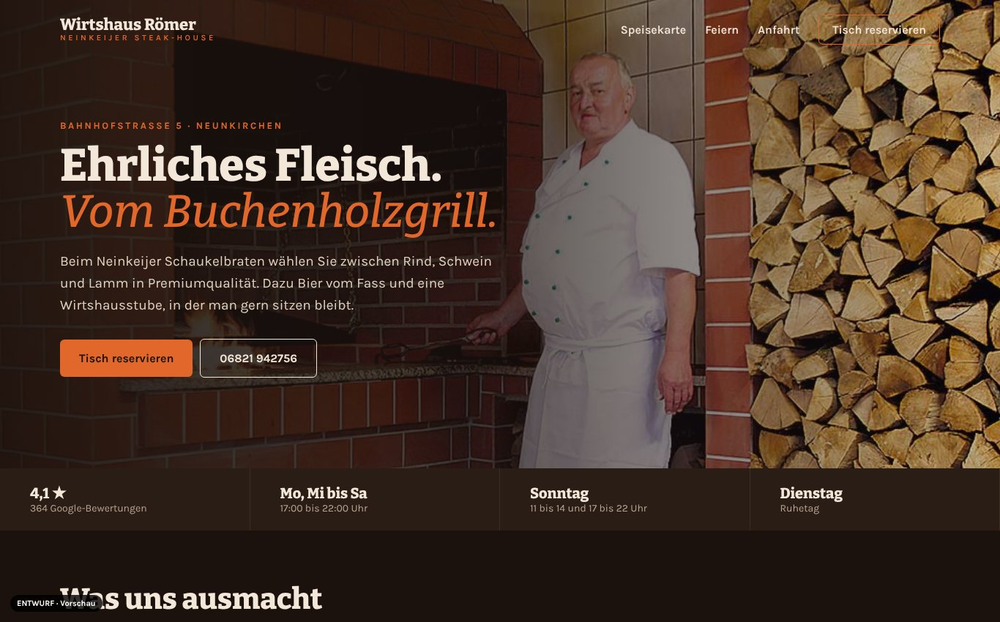
VORHERNACHHER
⇆
Was dem Inhaber auffällt
Kopfbereich als Bildcollage mit eingebetteter Schrift, Joomla-Seite mit 5,9 Sekunden Ladezeit
Hochwertige Fotos von Grill, Koch und Gaststube vorhanden, aber klein und versteckt
Keine Online-Reservierung, keine Feiern-Seite, Rezensionen zeigen unbeantwortete E-Mail-Anfragen
364 Bewertungen zeigen viel Nachfrage. Eine Reservierungsfunktion und eine Seite für Weihnachtsfeiern und Gruppen bringt planbare Umsätze im Herbst und Winter.
Angebot
Basis-Relaunch990 bis 1.590 €
Empfohlen, einmalig1.890 bis 2.990 €
Betreuung / Monat49 bis 149 €
Neue Website mit großen eigenen Fotos, Speisekarte, Online-Reservierung, Feiern und Gruppen, Gutscheinverkauf, Google-Profil mit Reservierungslink
Branchen-Extras
Weihnachtsfeier-Kampagne Oktober bis Dezember: Landingpage, Google-Beitrag, Facebook
Englische Kurzkarte (Bewertungen von internationalen Gästen ohne Deutschkenntnisse)
Online-Gutscheine als Weihnachtsgeschenk
Antwortvorlagen für Bewertungen und E-Mail-Anfragen
Gesprächsleitfaden
Guten Tag, Frau Hau? Ich bin Webdesigner aus Neunkirchen. Sie haben großartige Fotos vom Grill und der Gaststube, nur sieht man sie online kaum. Ich habe Ihnen mitgebracht, wie das aussehen kann, inklusive Online-Reservierung.
Einwand: 'Reservierungen kommen telefonisch': Gut so. Online-Anfragen kommen zusätzlich, auch nachts und am Ruhetag, wenn niemand ans Telefon geht.
UmsatzhebelGoogle 3,7 ★ (165)Besuch: 15:00 bis 17:00 Uhr
Schieber ziehen: links Vorher, rechts Nachher
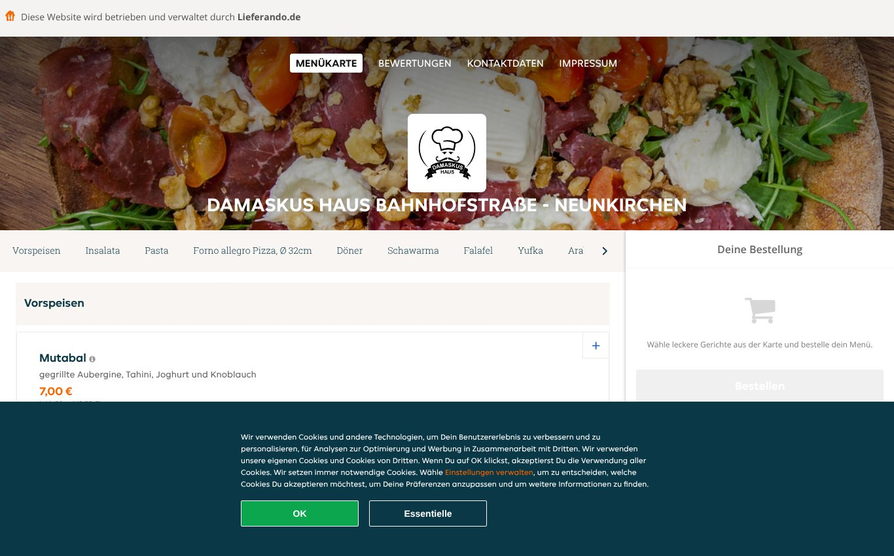
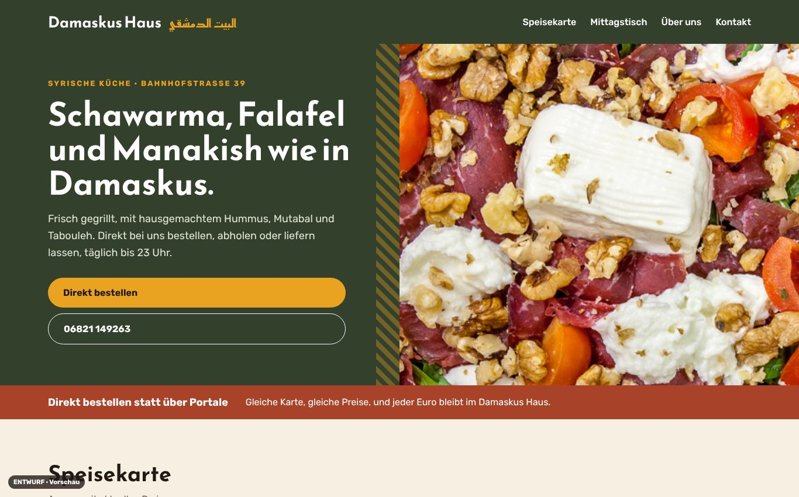
VORHERNACHHER
⇆
Was dem Inhaber auffällt
Die Website ist eine von Lieferando betriebene Standardseite ('Diese Website wird betrieben und verwaltet durch Lieferando.de')
Kein eigenes Design, keine Geschichte, keine Fotos vom Laden, keine Mehrsprachigkeit trotz syrischer Küche
Google-Schnitt 3,7 bei 165 Bewertungen: unbeantwortete Kritik drückt die Klickrate
Bei jeder Bestellung über eine Plattformseite fällt Provision an (Höhe laut Vertrag, Anbieterangaben nennen 23 bis 30 % für Marktplatzbestellungen). Eine eigene Seite mit eigenem Bestellweg holt Stammkunden aus dem Provisionsmodell.
Angebot
Basis-Relaunch990 bis 1.490 €
Empfohlen, einmalig1.890 bis 2.990 €
Betreuung / Monat59 bis 179 €
Eigene Website mit Markenauftritt, Speisekarte Deutsch, Arabisch und Englisch, provisionsfreies Bestellsystem, Google-Profil mit Fotos und Menü
Branchen-Extras
Reputations-Paket: alle Bewertungen professionell beantworten, QR-Bewertungsaufsteller, Ziel 4,2 in 6 Monaten (Ziel, keine Garantie)
TikTok und Instagram Reels: Schawarma-Spieß, Manakish aus dem Ofen, 3 pro Woche
Mittagsmenü für Berufstätige und Pendler am Bahnhof
Mehrsprachiges Google-Profil, Beiträge auch auf Arabisch
Gesprächsleitfaden
Guten Tag, ich bin Webdesigner aus Neunkirchen. Ihre Website gehört gerade eigentlich Lieferando. Ich habe Ihnen mitgebracht, wie das Damaskus Haus mit eigener Seite und eigener Bestellung aussieht.
Einwand: 'Lieferando bringt mir Kunden': Stimmt, Neukunden. Für die Stammkunden, die Sie schon kennen, brauchen Sie keinen Vermittler zu bezahlen.
Quick WinGoogle 5,0 ★ (11)Besuch: Nachmittag vor Kursbeginn, ca. 15:00 Uhr
Schieber ziehen: links Vorher, rechts Nachher
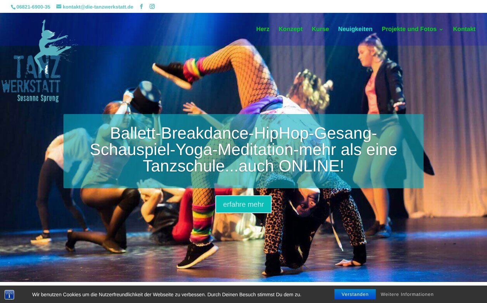
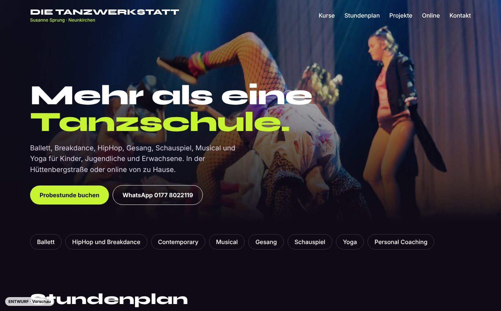
VORHERNACHHER
⇆
Was dem Inhaber auffällt
Ladezeit 11,4 Sekunden, Slider mit Text auf Bild schwer lesbar
Stundenplan als unübersichtliche Liste, kein Filter nach Alter oder Stil
Hervorragende Bühnenfotos vorhanden, aber nicht als Hauptargument genutzt, keine Online-Anmeldung zur Probestunde
Eltern wählen Kurse am Handy, meist abends. Ein filterbarer Stundenplan mit Probestunden-Anmeldung senkt die Hürde vom Interesse zur Anmeldung deutlich.
Angebot
Basis-Relaunch990 bis 1.590 €
Empfohlen, einmalig1.690 bis 2.590 €
Betreuung / Monat39 bis 99 €
Neue Website mit Bühnenfotos, filterbarem Stundenplan, Probestunden-Buchung, Online-Kursen, Aufführungen und Ticketinfo
Branchen-Extras
Instagram und TikTok mit Proben- und Bühnenclips (Einwilligungen der Eltern einholen)
Aufführungs-Landingpage mit Ticketverkauf
Google-Profil: Kurse als Leistungen, Fotos, Bewertungsbitte an Eltern (aktuell 11 Bewertungen)
Sommer-Workshops und Ferienkurse als eigene Kampagne
Gesprächsleitfaden
Guten Tag, Frau Sprung? Ich bin Webdesigner aus Neunkirchen. Sie haben fantastische Bühnenfotos. Ich habe Ihnen mitgebracht, wie Ihre Seite mit einem Stundenplan aussieht, über den Eltern direkt eine Probestunde buchen.
Einwand: 'Ich hab keine Zeit für Social Media': Das übernehme ich. Sie schicken mir Clips aus dem Training, ich mache daraus Beiträge.
10
Hotel Zum Ellenfeld
Hotel / Restaurant · Zweibrücker Straße 14, 66538 Neunkirchen · 06821 8169
Quick WinGoogle 4,2 ★ (149)Besuch: Mo bis Do 14:00 bis 16:00 Uhr (nach dem Stammessen)
Schieber ziehen: links Vorher, rechts Nachher
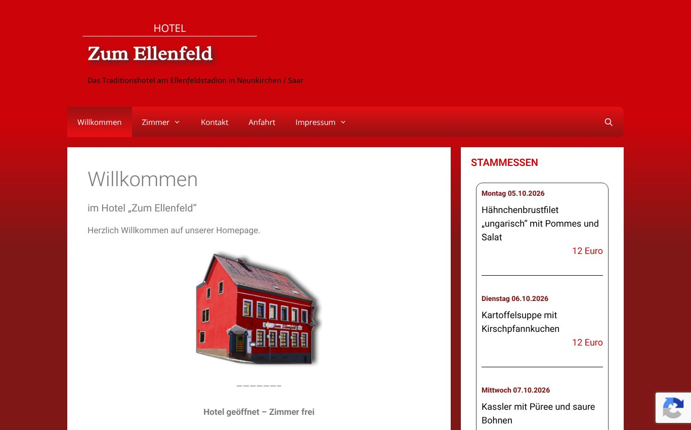
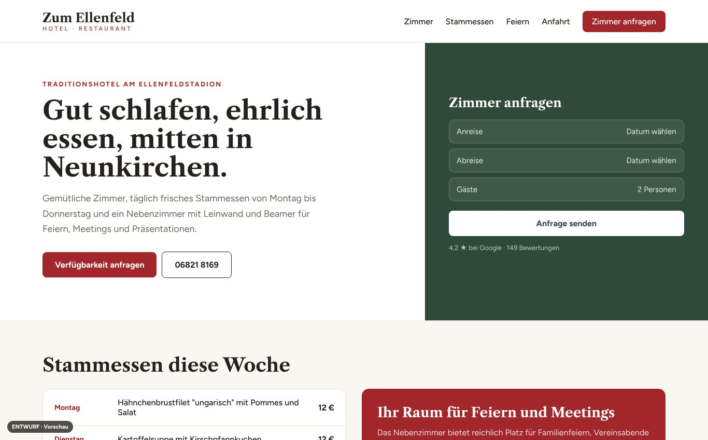
VORHERNACHHER
⇆
Was dem Inhaber auffällt
Ladezeit 23,7 Sekunden
Stammessen als Fließtext zwischen Strichlinien, keine Zimmerbilder oberhalb der Falz
Keine Online-Zimmeranfrage auf der Startseite, Nebenzimmer mit Beamer als Umsatzquelle kaum sichtbar
Direktbuchungen sparen die Kommission der Buchungsportale. Dazu ist das Nebenzimmer für Feiern und Meetings eine Einnahmequelle, die online kaum jemand findet.
Angebot
Basis-Relaunch990 bis 1.490 €
Empfohlen, einmalig1.590 bis 2.490 €
Betreuung / Monat39 bis 99 €
Neue Website mit Zimmeranfrage, Zimmerseite mit Preisen und Fotos, pflegbarem Stammessen-Wochenplan, Raumvermietung, Google-Hotelprofil
Branchen-Extras
Stammessen-Wochenplan, den das Team selbst in 2 Minuten pflegt, automatisch als Google-Beitrag
Raumvermietung für Vereine und Firmen als eigene Landingpage
Bewertungsantworten (gemischte Hotelbewertungen)
Fotoshooting der Zimmer
Gesprächsleitfaden
Guten Tag, ich bin Webdesigner aus Neunkirchen. Ihr Stammessen kennt hier jeder, online dauert es über 20 Sekunden, bis man es sieht. Ich habe Ihnen mitgebracht, wie das in Zukunft aussehen kann.
Einwand: 'Die Gäste buchen über Portale': Das bleibt so. Jede Direktbuchung über die eigene Seite spart aber die Portalgebühr.
Gesamtliste, Top 30 von 95
Ranking nach Gesamtscore
A Modernisierungsbedarf (0 bis 40), B Einfachheit (0 bis 20), C Geschäftspotenzial (0 bis 25), D Digitale Lücken (0 bis 15). "Nicht prüfbar" heißt: Seite antwortet nur unverschlüsselt oder leitet auf HTTP um. Das ist selbst ein Verkaufsargument, vor dem Besuch aber kurz am Handy gegenprüfen. Vollständige Liste mit allen Rohsignalen in der Excel-Datei.
#
Betrieb
Branche
Google
A
B
C
D
Score
Label
1
Schlüssel Thielen
Schlüsseldienst
4,6 (15)
33
16
17
13
79
Quick Win
2
Asia Wok Bistro
Restaurant (asiatisch)
4,4 (230)
28
15
24
10
77
Umsatzhebel
3
Pizza Heimservice Gondoliere
Pizzeria/Lieferdienst
4,0 (174)
24
16
25
10
75
Umsatzhebel
4
Beauty Nails Ornella
Nagelstudio
-
33
17
14
10
74
Quick Win
5
Krankengymnastik Rutz
Physiotherapie
5,0 (2)
33
13
15
13
74
Solide Chance
6
Orient Grill
Imbiss/Döner
4,2 (616)
22
16
25
10
73
Nicht prüfbar
7
Markt Apotheke
Apotheke
4,8 (56)
32
13
19
7
71
Solide Chance
8
aqua bar lounge club
Bar/Club
-
30
15
15
9
69
Umsatzhebel
9
Seiler Friseurteam
Friseur
-
22
17
18
10
67
Nicht prüfbar
10
Kosmetik Rova
Kosmetik
-
22
17
18
10
67
Nicht prüfbar
11
Wirtshaus Römer Steakhaus
Restaurant
4,1 (364)
21
15
24
7
67
Umsatzhebel
12
Blumen Rebel
Blumen/Gärtnerei
4,4 (89)
24
16
15
10
65
Quick Win
13
Damaskus Haus
Imbiss/Restaurant
3,7 (165)
16
12
25
12
65
Solide Chance
14
Bella Italia Pizzaheimservice
Pizzeria/Lieferdienst
-
22
16
16
10
64
Nicht prüfbar
15
Arminia Steuerberatung
Steuerberater
5,0 (1)
28
10
12
13
63
Langläufer
16
Pension am Stummplatz
Pension
3,5 (157)
17
14
22
10
63
Solide Chance
17
La Campanella
Pizzeria
-
21
12
20
9
62
Umsatzhebel
18
Osteopathie Krämer
Osteopathie/Physio
-
22
13
16
10
61
Nicht prüfbar
19
Tanzwerkstatt Susanne Sprung
Tanzschule
5,0 (11)
19
15
18
9
61
Quick Win
20
Zahnarztpraxis am Markt
Zahnarzt
4,0 (93)
19
13
19
10
61
Solide Chance
21
AC-1 Sport- und Freizeitpark
Fitnessstudio
4,7 (218)
18
15
18
10
61
Quick Win
22
Hotel Zum Ellenfeld
Hotel
4,2 (149)
23
14
16
7
60
Quick Win
23
Geflügel Schlemmerlädchen Lorig
Metzgerei/Geflügel
-
22
16
12
10
60
Nicht prüfbar
24
Hifi Zenit
Hifi/Elektro-Fachhandel
5,0 (195)
17
16
21
6
60
Solide Chance
25
Balkan Bäckerei Prizreni
Bäckerei
4,6 (5)
16
13
18
12
59
Solide Chance
26
TuS 1860 Gaststätte
Gaststätte
4,3 (142)
18
15
18
7
58
Umsatzhebel
27
Bären Apotheke
Apotheke
-
22
13
12
10
57
Nicht prüfbar
28
Linden Apotheke
Apotheke
-
22
13
12
10
57
Nicht prüfbar
29
Physiotherapie Heinz Herrmann
Physiotherapie
-
22
13
12
10
57
Nicht prüfbar
30
HS Rechtsanwälte
Rechtsanwalt
-
22
12
13
10
57
Nicht prüfbar
Tailored Services
Zusatzleistungen nach Branche
Döner, Kebab, Imbiss
Eigenes Bestellsystem ohne Provision, Abholung und Lieferung: 990 bis 1.990 €
Mehrsprachige Speisekarte (DE, EN, TR oder AR): 190 bis 390 €
QR-Aufsteller 'Bewerte uns' und 'Nächstes Mal direkt bestellen': 99 bis 199 €
TikTok und Instagram Reels vom Spieß, 3 pro Woche: 390 bis 790 €/Monat
Bewertungsantworten mit KI-Entwurf zur Freigabe: 79 bis 149 €/Monat
Hebel: Plattformprovision 23 bis 30 % laut Anbieterangabe. Orient Grill (Rang 6, 616 Bewertungen) leitet auf unverschlüsseltes HTTP um: nächster Kandidat.
Pizzeria und Lieferdienst
Bestellsystem plus Liefergebiet und Mindestbestellwert: 1.490 bis 2.490 €
Digitale Stempelkarte per QR auf dem Karton: 149 bis 349 €
Karriereseite plus Google-Beitrag für Fahrer und Küchenhilfe: 190 bis 390 €
Lieferzeit-Hinweis und Bewertungsmanagement: 79 bis 149 €/Monat
La Campanella, Da Enzo und Piccobello laufen ebenfalls auf Plattform-Standardseiten.
Restaurant, Steakhaus, Wirtshaus
Online-Reservierung: 290 bis 590 €
Feiern- und Gruppenseite für die Weihnachtssaison: 290 bis 490 €
Online-Gutscheinverkauf: 290 bis 590 €
Englische Kurzkarte: 149 bis 290 €
Social Media 2 bis 3 Beiträge pro Woche: 290 bis 590 €/Monat
Oktober ist der richtige Monat: Weihnachtsfeiern werden jetzt gebucht.
Hotel und Pension
Zimmeranfrage oder Direktbuchung: 390 bis 990 €
Pflegbarer Wochenplan (Stammessen) mit Google-Beitrag: 190 bis 390 €
Raumvermietung als Landingpage: 190 bis 390 €
Zimmer-Fotoshooting: 290 bis 490 €
Pension am Stummplatz (Jimdo, Google 3,5 bei 157 Bewertungen) braucht zuerst Bewertungsmanagement.
Spielothek und Spielhalle
Sachliche Infoseite: Öffnungszeiten, Anfahrt, Ausstattung, Jugend- und Spielerschutz: 590 bis 990 €
Google-Profil-Pflege mit Ambientefotos: 49 bis 99 €/Monat
Karriereseite für Servicekräfte: 190 bis 390 €
Bewertungsantworten: 49 bis 99 €/Monat
Recht: Glücksspielstaatsvertrag 2021 und saarländisches Spielhallenrecht. Keine Gewinnversprechen, keine Ansprache Minderjähriger, Texte juristisch prüfen lassen. Lux Play (Rang 56) hat eine neue Baukastenseite, Ansatz dort eher Google-Profil und Rechtssicherheit der Texte.
Apotheke
E-Rezept-Anleitung, Vorbestellung, Botendienst prominent: in Relaunch enthalten
Notdienst- und Öffnungsstatus live: 149 bis 290 €
Aktionen als Google-Beitrag: 49 bis 99 €/Monat
Karriereseite PTA: 190 bis 390 €
Heilmittelwerbegesetz beachten. Bären und Linden Apotheke antworten nur unverschlüsselt: weitere Kandidaten.
Physiotherapie, Zahnarzt, Praxen
Terminanfrage und Hausbesuch-Formular: 190 bis 390 €
Karriereseite mit Stellenportal-Verteilung: 290 bis 590 €
Leistungsseiten verständlich erklärt: 90 bis 150 € je Seite
Barrierearme Gestaltung: im Relaunch enthalten
Heilmittelwerbegesetz und Berufsordnung: keine Werbung mit Patientendank, keine Heilversprechen.
Tanzschule, Fitness, Kampfsport
Filterbarer Kursplan plus Probestunden-Buchung: 390 bis 890 €
Aufführungs- oder Event-Landingpage mit Tickets: 290 bis 590 €
Reels aus dem Training, 2 bis 3 pro Woche: 290 bis 590 €/Monat
Ferienkurs-Kampagne: 190 bis 390 €
Bei Kindern immer schriftliche Einwilligung der Eltern für Fotos und Videos.
Beauty, Nagelstudio, Friseur
Online-Terminbuchung mit Erinnerung: 290 bis 590 €
Google-Profil neu anlegen und verifizieren: 190 bis 290 €
Instagram mit Vorher/Nachher der Arbeiten: 290 bis 590 €/Monat
Gutscheinverkauf online: 290 bis 590 €
Seiler Friseurteam und Kosmetik Rova antworten nur unverschlüsselt: weitere Kandidaten.
Handwerk, Schlüsseldienst, Service
Klick-zum-Anrufen und Notruf prominent: im Relaunch enthalten
Google-Profil als Hauptkanal: 190 bis 390 € einmalig
Einträge in Verzeichnissen vereinheitlichen (NAP): 149 bis 290 €
Lokale Backlinks: Vereine, Stadtportal, Lokalpresse: 290 bis 690 €
Für Notdienste zählt die Google-Suche fast allein.
Kanzleien und Steuerberatung
Rechtsgebiete oder Leistungen als eigene Seiten: 90 bis 150 € je Seite
Mandanten-Upload oder Portal-Link: 190 bis 390 €
Karriereseite: 290 bis 590 €
Langläufer: mehrere Partner entscheiden. Berufsrecht beachten. Arminia (Rang 15) ist optisch der älteste Auftritt in dieser Gruppe.
Preisbausteine (Marktannahme, vor erstem Angebot plausibilisieren)
Updates, Backups, bis 30 Minuten Änderungen pro Monat
29 bis 69 € pro Monat
Social Media
Redaktionsplan, 2 bis 3 Beiträge pro Woche, KI-Untertitel
290 bis 890 € pro Monat
Fotoshooting vor Ort
Laden, Produkte, Team, 20 bearbeitete Bilder
190 bis 490 €
Referenzrabatt für die ersten drei Kunden: 20 bis 30 % gegen Erlaubnis, das Vorher/Nachher zu zeigen, und Bitte um eine ehrliche Google-Bewertung. Zahlung 50 % bei Auftrag, 50 % nach Abnahme. Kleinunternehmerregelung, Gewerbeanmeldung und Nebentätigkeit mit Arbeitgeber vorab klären.
Reihenfolge nach Lage und Öffnungszeiten
Besuchsplan, zwei Tage
Tag 1 · Mittwoch
10:00Schlüssel Thielen, Hüttenbergstraße 30
10:45Physiotherapie Rutz, Max-Braun-Straße 1
11:15Markt Apotheke, gleiches Haus, nach Frau Daniels fragen
17:00Gegencheck nur-HTTP-Seiten am Handy: Orient Grill, Seiler, Rova, Bella Italia
Nachfassen: Tag 2 kurze Nachricht, Tag 7 zweiter Besuch mit angepasster Vorschau (echte Fotos eingesetzt), Tag 21 letzter Kontakt. Erstkontakt persönlich oder per Brief, keine kalten Werbe-Mails oder -Anrufe (UWG).